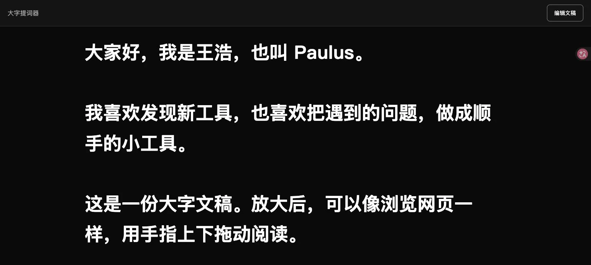
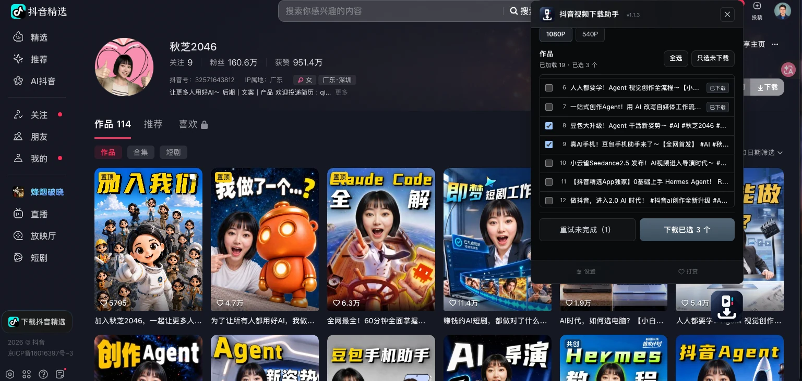

知行合一看板
让分散的行情信息，集中在一屏。
把日线、周线、成交量与多组指标放到同一界面，方便切换标的、对照图表，形成适合自己观察习惯的看盘布局。
- 日线与周线对照
- KDJ、MACD 等指标副图
- 标的切换与行情展示


正在学习 IP 孵化与内容运营，
用 AI 连接想法与行动。

点击选一盘，或直接向下滚动。

向下浏览，录像带会跟随内容自动切换。
把学习，放进自己的账号里。
抖音 · AI 工具分享
这是我自己的自媒体账号。我在这里分享 AI 工具与使用方法，也用自己的内容练习选题、脚本、画面制作和发布。
目前仍在学习与积累阶段，希望把每一次尝试整理成可以复用的方法，逐步走通内容制作与账号运营的全过程。

把遇到的问题，做成顺手的工具。
围绕看盘、口播录制、提示词整理和素材下载，我尝试把自己的使用需求做成工具。从提出问题，到调整界面和功能，在实际使用中一点点改进。
让分散的行情信息，集中在一屏。
把日线、周线、成交量与多组指标放到同一界面，方便切换标的、对照图表，形成适合自己观察习惯的看盘布局。
放大文稿，按自己的节奏读。
从口播提词到 iPad 阅读，我把功能收拢成一个简单动作：粘贴文稿，放大显示，再像浏览网页一样上下拖动。保留原文段落，修改后也能回到刚才的阅读位置。

把画面想法，整理成清晰的描述。
输入中文画面描述，用本地词典、规则和模板整理不同模型的提示词。支持 SDXL、Pony、Krea 2 和 MiniMax H3，输出可以继续编辑，再复制或下载。
已采用 MIT 许可证开源。

选中的作品，能找到下载入口。
先解决切换视频后仍识别上一条作品的问题，再修复列表下载按钮被面板裁切的问题。1.1.3 修复版将操作栏固定在面板底部，勾选作品后就能看到“下载已选”。
基于 snowflake-hangdudu 的插件进行修复实践；1.1.3 为本地修复版编号。开源内容为我编写的修复脚本、测试和说明。

从一个角色，到一段故事。
AI 漫剧制作记录 · 第一集


张宅正房的晨光，东岳寺山亭的飞瀑。两张场景图记录了项目中的空间与光线探索。


作品之外，还有生活。
我是王浩，也叫 Paulus，来自天津，毕业于云南大学国际贸易专业。刚认识时，我通常先听、先观察；遇到有趣的事，又总想分享给身边的人。
我喜欢音乐、动漫和骑车，偶尔带孩子出门旅行。比起记录每一刻，我更喜欢投入当下，也乐意花时间把一件新鲜事学明白。
以前，我和几位伙伴一起组织青年团体，每月策划一两场活动。从十几人的小聚，到三四十人的相聚，留下了许多热闹的回忆。
活动里有户外游戏、团队协作，也有养老院探访与陪伴互动。这些照片，记录了我们一起参与、一起做事的时刻。


我做过隧道运营养护、咖啡师、会计和保险销售，也负责过公司财务对接。不同的工作，让我接触了不同的人和做事方式。
现在，我把更多精力放在 AI 工具分享和视频创作上。一边学，一边做，希望把每一次尝试，慢慢积累成拿得出手的作品。

关于作品，或一个有趣的新想法，欢迎联系。
138 2180 7142